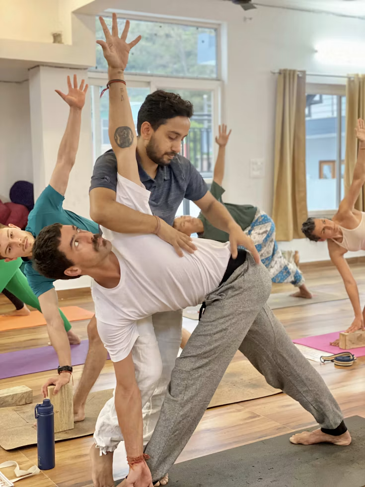

What we teach
Styles we practice
Every body has different needs. We focus on four core practices so you can build strength, improve posture, or quiet your mind.
A teacher’s approach
More than
movement.
Explore the ideas that connect the physical practice to attention, reflection, and the way we meet everyday life.

Find your rhythm
Your way
to practice.
Different days ask for different things. There can be room for movement, a quiet moment at home, or a conversation about your next step.
A shared space
for practice.
A group practice can offer the simple experience of showing up alongside others. Get in touch to talk about the kind of class or shared practice you are looking for.
About Yogadyah
A local studio for everyday health.
Yogadyah is a local yoga studio in Sector 7, Gurugram. We make traditional yoga easy for working professionals and families.
You do not need to be flexible to start. Our teacher knows each student and respects their physical limits, so you can practice at a pace that feels right for you.
- Small batch sizes for safe posture correction.
- Clear instructions without confusing words.
- Focus on steady health and stress relief.



Our community
Student testimonials
Sample reviews for this local preview.
The Yogadyah journal
Notes on Practice & Health
Get in touch
Visit the Studio or Book a Class
- Studio Address
- 199B/28, 4th Floor, Jai Maa Vaishno Homes, Gali No. 4, Jyoti Park, near Ashirwad Lawns, Sector 7, Gurugram, Haryana 122001
- Batch Timings
- Morning (6:00 AM – 10:00 AM)Evening (4:30 PM – 7:30 PM)Monday to Saturday
- Opening Hours
- Monday–Sunday: 9:00 AM – 5:00 PM
- Phone / WhatsApp
- +91 98365 21721Chat on WhatsApp
- sanshree25@gmail.com